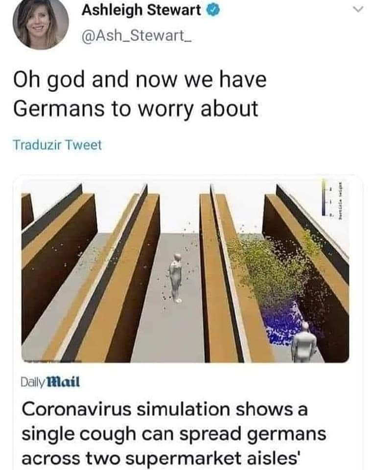
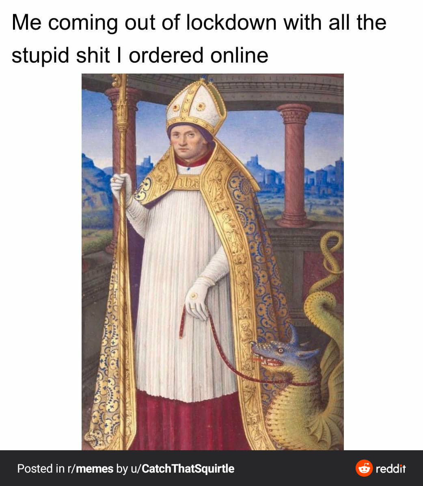

'Tis a fine day for a meme, milord 🧐
Tutaj znajdziesz kilka memów z czasów zarazy
Czyste niebo

Page not found

Przechowywanie w chmurze

Bądź jak pan Darcy
Germans vs germs
Pamiętajcie o słuchawkach
Biologia w domu

Nie rób impulsywnych zakupów
Ups
Pizza

Zaraza
Kto jest bez winy niech pierwszy rzuci kamieniem

Guilty as charged
Na górę